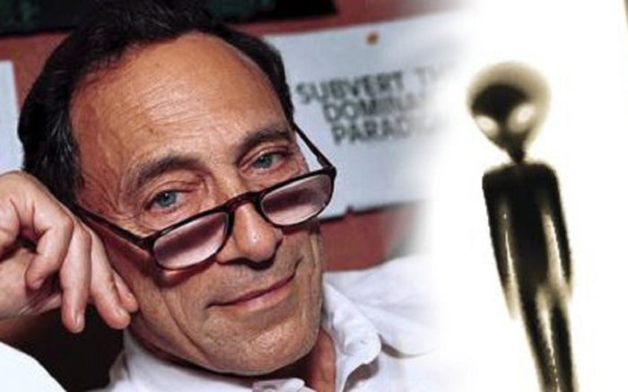

The consciousness of a person experiencing abduction is not normal. Here is the proof.

(image source: https://www.ufoinsight.com/aliens/abductions/john-mack-alien-abduction-files )
Preface
I saw a video of John Mack's claim that he has examined abductee/contactee himself in detail and they are not insane, etc., so I will disprove that claim.audio transcript
- The program's view (narration): the psychiatrist's diagnostic tests showed that abdcutee's psyche was no different from that of a normal human being. 16:11 the majority of abductees do not appear to be deluded confabulating lying 16:18 self-dramatizing or suffering from a clear mental illness 16:23 while psychopathology is indicated in some isolated alien abduction cases 16:29 assessment by both clinical examination and standardized tests has shown that as 16:35 a group abduction experiencers are no different from the general population 16:42 psychologists have argued that abductee's mental health is no better or worse 16:47 than the average individual▼Click to Expansion
professor mack eventually concluded that the only phenomenon in psychiatry that 9:31 adequately explained the patient's symptoms in several of the most compelling cases 9:37 was post-traumatic stress disorder this would imply that the patient 9:42 genuinely believed that the remembered frightening incident had really occurred 9:49 these people have been examined by myself they've been tested psychologically they are of above 9:55 average intelligence they are sound mind they've been shown as of superior mental functioning by the 10:00 testers so there is not indication of any kind of psychiatric condition that can account for this that i've been able 10:06 to find in fact when one abductee hears the story of another abductee they react 10:12 with shock because they don't want to believe it's true they would rather believe it's a dream or a form of mental illness then that this is something real 10:18 because it's so shattering to their notion of reality and that's that's happened over and over 10:23 again among the people i've been working withVideo(1:01:18)
Most Compelling Stories of UFO Encounters of the 4th Kind… ABDUCTED by ALIENS Full Documentarymy opinion 1
- I don't think there is any mistake in the diagnosis itself, "I diagnosed abductee/contactee myself in detail and it was not insanity." However, it should have been accompanied by the condition, "It is not clear whether he was conscious during the abduction experience...". - Even if the patient's state of consciousness during the diagnostic test was normal, there is no guarantee that his/her mental state was also normal during the abduction experience. This is not a criticism; John Mack himself provides a concrete example of a case in which the mental state during the abduction experience was not normal. This is discussed in the previous article below.- Case B : Wife fainted and husband held her in his arms. Meanwhile, the wife floated in the air, was taken into the UFO, faced the ET, and eventually returned to her original room...that is how she experienced it. However, the husband was holding the wife's body the whole time. ref: John Mack's research: two opposite cases of abduction (part-1 in progress) (2021-10-03)- In the case above, it is clear that the abductee's consciousness during the abduction experience cannot be normal. - Dr. Karla Turner also discusses a similar case. It is shown below.I will focus on the title of Dr. Karla Turner's (deceased) lecture. I have introduced many strange phenomena caused by UFOs, aliens, and other dimensional beings. Among them, the following phenomena have been reported frequently in many places. UFOs hovering in the night sky or above a house with the ceiling of the room transparent can be seen from "inside" the room. UFOs can be abducted by slipping through closed windows and walls. The sound of a helicopter hovering over the house is heard, but family members living in the same house do not hear the helicopter's blast. A glowing ball appears in the room. - The latter half of the video below shows an extremely rare case of such a "person in the middle of experiencing a strange phenomenon (experiencer)" being observed by several people (observers) in the same room.... The observer could only see the experiencer surrounded by strange lights. ........ - In the early 1990s, Ted Rice visited his girlfriend Marie in Florida. At that time, a woman named Frances was also visiting Marie's house. At night, Marie and Frances slept in one room with bunk beds because they were both women, and Ted slept in another room across the hall. - Soon after Ted got on the bed, Marie said, "Ted, hurry up! Ted rushed to Marie's room and saw a bright blue light flooding the hallway from their room. Karla Turner : An example of an amazing hallucinogenic projection by an alien (or other dimensional being) (in progress: Part 2) (2015-03-12)- Another example is the abduction case of Charles Hickson and Calvin Parker (below). In this case, when Charles Hickson regained consciousness on the pier after his abduction experience, Calvin Parker, who was standing nearby, was still stunned. It took some time to bring him back to his senses. (Charles Hickson testified to this in the documentary video.) Abduction cases with third-party eyewitnesses (+ additional) (2014-05-04)my opinion 2
- There are several things that can be listed that are not normal (i.e., the brain is malfunctioning) during the experience of it. For example, I think the following experiences correspond to them. - Missing-411 - Encounter with Bigfoot - Encounters with Ghosts - Possession - Tongues, automatic writing - Channeling - In the spiritual and religious worlds in general, the following is a truth that can only be attained by those who have completely transcended everyday consciousness. It is something precious and hard to attain. However, I consider this to be a complete perversion, not transcendence, but simply a malfunction of the brain. - OBE/NDE - Demonstration of ESP ability, Divine Transformation - Religious Mystical Experiences - God experiences - Possession by a god - Enlightenment, revelation experiences - Ability to recall countless past lives - Liberation - This is just speculation... I think that even if ESP ability is real (which I judge highly likely based on Dean Radin's experiments), its survival value is negative. if ESP ability is truly useful, it should have been more widespread in the history of evolution. Seeing that it only works in very rare cases, I think the cost of the organism to make it work is too high (or the negative aspects are too great) to be worth it. Just as the remote viewing project was suspended.Thanks
- Translated with www.DeepL.com/Translator (free version) (2022-04-11)
First published
The state of consciousness during abduction is abnormal → evidence of this (2022-04-11)
Original article in Japanese
abduction を体験中の人間は意識が正常ではない → その証拠 (2022-04-11)